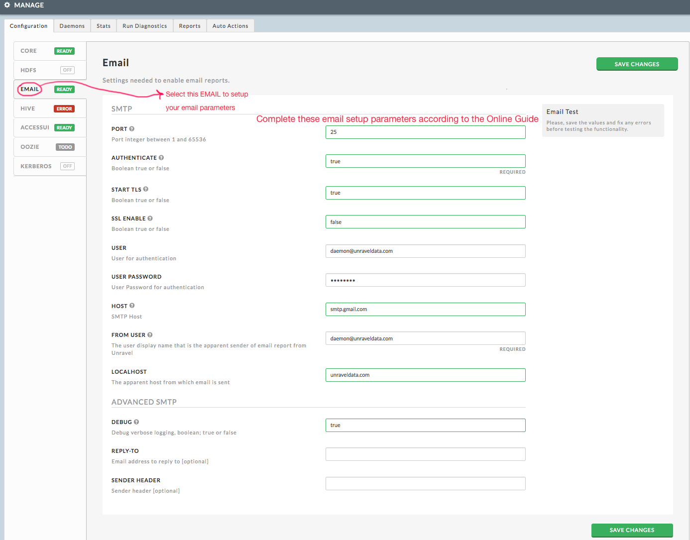

Custom Configurations
Creating Multiple Workers for High Volume Data
Tip
These instructions apply to single host Unravel deployments only; for multihost deployments, please contact Unravel Support.
If you have 10000-20000 jobs per day, run these commands on Unravel Server to enable these workers:
# sudo chkconfig --add unravel_ew_2 # sudo chkconfig --add unravel_jcw2_2 # sudo chkconfig --add unravel_sw_2
If you have 20000-30000 jobs per day, run these commands on Unravel Server to enable these workers:
# sudo chkconfig --add unravel_ew_3 # sudo chkconfig --add unravel_jcw2_3 # sudo chkconfig --add unravel_sw_3
If you have more than 30000 jobs per day, run these commands on Unravel Server to enable these workers:
# sudo chkconfig --add unravel_ew_4 # sudo chkconfig --add unravel_jcw2_4 # sudo chkconfig --add unravel_sw_4
Run the following command to start the additional daemons you enabled above:
# sudo /etc/init.d/unravel_all.sh start
Configuring Multiple Hosts for Unravel Server
This topic explains how to configure multiple hosts for Unravel Server. This is useful for volume/throughput/reliability requirements.
If you use Kerberos, set that up first on
host1.Install the same Unravel RPM on one or two additional hosts, hereafter referred to as
host2andhost3. This distinction is important because certain instructions only apply to specific hosts.
Note
The internal DNS or IP address of a host is specific to your installation.
Each host is assigned unique roles identified by daemon names that start with unravel_.
When you complete the steps below, the expected result is
Multiple Unravel hosts work together in an ensemble.
Each host has a unique role, and is identified by a daemon named
unravel_xyzorunravel_xyz_n(wherenis 1, 2, 3,...), which runs on exactly one host.Unravel Web UI (
unravel_tc) runs onhost1.Port 4043
unravel_lrruns onhost2.If you do not use an external database (db),
unravel_dbruns onhost1. However,unravel_dbcan also run harmlessly if an external db is used./usr/local/unravel/etc/unravel.propertiesis identical on all Unravel hosts in the ensemble.Note
The file
unravel.propertiesis never changed by an RPM upgrade because it contains site-specific information, but some one-time changes occur when setting up multiple hosts. The fileunravel.propertiesmust be identical on all hosts, so if you are using data center automation like Puppet, Chef, Salt, Ansible, CloudFormation, Cfengine, and so on, you must maintain one "golden"unravel.propertiesper Unravel ensemble. After you modifyunravel.propertiesas described below, you must update the "golden"unravel.propertiesfile for your site.Daemons are enabled/disabled via chkconfig. chkconfig sets symbolic links which are persistent across Unravel Server RPM upgrades.
On each Unravel host, run this command:
sudo /etc/init.d/unravel_all.sh stop
Pick a machine to be host1, where the Unravel Web UI will run.
If the bundled db is in use, edit
/usr/local/unravel/etc/unravel.propertieson host1 to change:Note
Replace
127.0.0.1with your LAN IP address or fully qualified hostname, replace3316with your port number, and replaceunravel_mysql_prodwith your database name.To find your fully qualified hostname, type
hostname -Iat the OS prompt.unravel.jdbc.url=jdbc:mysql://127.0.0.1:3316/unravel_mysql_prod
Copy
/usr/local/unravel/etc/unravel.properties,/usr/local/unravel/etc/unravel.ext.sh, and /etc/unravel_ctl (if present) from host1 to host2 (and host3, if you are using three hosts). For example,# host1 # scp /usr/local/unravel/etc/unravel.properties host2:/usr/local/unravel/etc/ # scp /usr/local/unravel/etc/unravel.ext.sh host2:/usr/local/unravel/etc/ # scp /etc/unravel_ctl host2:/etc/
Verify that the ownership of
unravel.propertiesandunravel.ext.shisunravel:unravel. If /etc/unravel_ctl is used, it should be owned by root:root.
Important Note
The scripts invoked below will make an identical change to the unravel.properties file on each machine.
Use these scripts to assign unique roles to the hosts. To reduce the chance of errors, the command line arguments are the same on each host, but notice that the script name is different. The arguments are the hostnames IP addresses of the hosts in the ensemble.
For a 2-host ensemble (substitute host):
# host1 sudo /usr/local/unravel/install_bin/switch_to_1of2.sh\ host1 host2 # host2 sudo /usr/local/unravel/install_bin/switch_to_2of2.sh\ host1 host2
For a 3-host ensemble (substitute host):
# host1 sudo /usr/local/unravel/install_bin/switch_to_1of3.sh\ host1 host2 host3 # host2 sudo /usr/local/unravel/install_bin/switch_to_2of3.sh\ host1 host2 host3 # host3 sudo /usr/local/unravel/install_bin/switch_to_3of3.sh\ host1 host2 host3
These scripts establish the roles each host plays in the ensemble. The main effect is to assign specific Unravel logical daemons to one host and only one host.
Note that some daemons have names like unravel_xyz_1 or unravel_xyz_2, and so on. The entire name with the instance numeric suffix is set to run on one host in the ensemble. In some cases, multiple xyz numeric instances run on one machine, but the overall name with suffix runs on one host only.
The switch_to_* scripts change unravel.properties in a coordinated fashion and also create a file, unravel.id.properties, to hold the integer property indicating which role the particular machine has (1, 2, or 3).
Kafka partition assignment (for 3 host installs) is done by evenly distributing a topic over the hosts that exist at topic create time. Topics must be created anew when a new host is added in order to have proper distribution.
Perform these steps, in sequential order, on the specific hosts as indicated by the prompt name. Skip host3 if you are only using 2 hosts for Unravel Server:
Stop all and clear Zookeeper and Kafka data areas on each host:
# host1 sudo /usr/local/unravel/install_bin/kafka_clear.sh # host2 sudo /usr/local/unravel/install_bin/kafka_clear.sh # host3 sudo /usr/local/unravel/install_bin/kafka_clear.sh
Start up Zookeeper ensemble:
# host1 sudo /etc/init.d/unravel_all.sh start-zk # host2 sudo /etc/init.d/unravel_all.sh start-zk # host3 sudo /etc/init.d/unravel_all.sh start-zk
Wait 15sec for Zookeeper quorum to settle:
sleep 15
Start up Kafka ensemble:
# host1 sudo /etc/init.d/unravel_all.sh start-k # host2 sudo /etc/init.d/unravel_all.sh start-k # host3 sudo /etc/init.d/unravel_all.sh start-k
Wait 10sec for Kafka coordination:
sleep 10
Create the Kafka topics (only on one host):
# host1 sudo /usr/local/unravel/install_bin/kafka_create_topics.sh
Finish multi-host installation by starting up Unravel Server:
# host1 sudo /etc/init.d/unravel_all.sh start # host1 echo "http://$(hostname -f):3000/" # host2 sudo /etc/init.d/unravel_all.sh start
The port 4043 is on host2 and that means the hive-site.xml file changes needed for Unravel hive-hook are in /usr/local/unravel/hive-hook/hive-site.xml.snip on host2. If hive-site.xml was already configured for host1, then modify it for host2.
unravel.properties as new golden fileDefining a Custom TC Port
Tip
These instructions apply to any deployment.
Run the following command on Unravel Server host1. Replace 18080 with your chosen port number:
# echo 'export UNRAVEL_LISTEN_PORT={18080}' \
>>/usr/local/unravel/etc/unravel.ext.shSetting Retention Time in Unravel Server
To adjust the retention time (time horizon), you need to change three settings. These settings can be made in /usr/local/unravel/etc/unravel.properties or via the Manage page, Configuration tab, Core section (tab on left) and scroll down to the Retention heading. If you make the setting in the Manage page Configuration tab, then the corresponding property in unravel.properties will be ignored because settings made in the web UI take precedence.
When changing these settings, be aware that long retention requires significant disk space. As a rule of thumb, each map-reduce or Spark job requires about 1MB of disk space. That means about 1000 jobs per 1GB of disk.
In Unravel Web UI, select the Manage page, Configuration tab, and Core section (tab on left). The settings below are show the label in the web UI and the boxes show the corresponding property you can optionally set in
/usr/local/unravel/etc/unravel.propertiesif you prefer.The TIME SERIES RETENTION DAYS field is number of days to keep the heaviest data (such as error logs and drill-down details). This corresponds to the property in
unravel.properties:com.unraveldata.retention.max.days=30
This setting is the most significant factor in controlling disk space usage in the database used by Unravel.
The WEEKS TO SHOW FOR SEARCH RESULTS field is number of weeks to show in search results. This corresponds to the property in
unravel.properties:com.unraveldata.recent.maxSize.weeks=2
This value should be no larger than the next setting minus 1. If recent activity in Unravel gives you too many results, consider making this smaller. It should not be less than 2.
The WEEKS TO SHOW FOR DEEP SEARCH RESULTS field is number of weeks to retain for search results. This corresponds to the property in
unravel.properties:com.unraveldata.history.maxSize.weeks=4
This value should be at least 1 week more than the setting immediately above, so that com.unraveldata.recent.maxSize.weeks < com.unraveldata.history.maxSize.weeks is true.
After changing any of the settings above, restart
unravel_tdservice:sudo /etc/init.d/unravel_td restart
Setting Up Email for Auto Actions and Collaboration
You can specify an SMTP server for Unravel Server so that it can send reports, alerts, and collaboration emails. Several examples are shown below. Adapt the one that is most similar to your environment.
You can set these values through Unravel Web UI's Manage page | Configuration | Email side tab as shown in diagram. The Web UI column in the table below corresponds to the values in the Unravel Web UI dialog box.
|  |
An alternative to using Unravel Web UI's Manage page is to enter the settings into /usr/local/unravel/etc/unravel.properties using the property name shown in the Property column.
Note
If you specify a saved email setting in Unravel Web UI, that setting overrides the corresponding setting in the unravel.properties file.
When you do not specify properties or configuration settings, Unravel Server tries to use the default 'classic' SMTP setting at localhost:25 ; this sometimes works for customers that set up SMTP spooling with sendmail or postfix, but it might block emails to external domains (for anti-spam reasons). On EC2, this sometimes works for small emails, but significant use is blocked for anti-spam reasons.
|
Web UI |
Property |
Value |
Description |
|---|---|---|---|
|
PORT |
mail.smtp.port |
25 |
Port |
|
AUTHENTICATE |
mail.smtp.auth |
false |
Enable SMTP authentication? If true, then USER (mail.smtp.user) and USER PASSWORD (mail.smtp.pw) are used when connecting |
|
START TLS |
mail.smtp.starttls.enable |
false |
Use start-TLS? |
|
SSL ENABLE |
mail.smtp.ssl.enable |
false |
Use SSL right from the start? |
|
USER |
mail.smtp.user |
null |
Username for SMTP authentication |
|
USER PASSWORD |
mail.smtp.pw |
null |
Password for SMTP authentication |
|
HOST |
mail.smtp.host |
localhost |
Host for SMTP server |
|
FROM USER |
mail.smtp.from |
someone@example.com |
Use a |
|
LOCALHOST |
mail.smtp.localhost |
localhost.local |
A domain name for apparent sender; must have at least one dot (e.g. organization.com) |
|
DEBUG |
mail.smtp.debug |
false |
Enable debug mode? Set to true (temporarily) to see more details in logs. |
These settings are for our internal use. Do not compile this into the product or otherwise use as a default in our source code. For security reasons, we don't want to mix our internal testing SMTP (or POP) with the external one.
|
Config Label |
Property |
Value |
Description |
|---|---|---|---|
|
PORT |
mail.smtp.port |
587 |
Port |
|
AUTHENTICATE |
mail.smtp.auth |
true |
Enable SMTP authentication? |
|
START TLS |
mail.smtp.starttls.enable |
true |
Use start-TLS? |
|
SSL ENABLE |
mail.smtp.ssl.enable |
false |
Use SSL right from the start? |
|
USER |
mail.smtp.user |
someone@organization.com |
Username for SMTP authentication |
|
USER PASSWORD |
******** |
Password for SMTP authentication |
|
|
HOST |
mail.smtp.host |
Host for SMTP server |
|
|
FROM USER |
mail.smtp.from |
someone@example.com |
This sets the From header |
|
LOCALHOST |
mail.smtp.localhost |
example.com |
A domain name for apparent sender; must have at least one dot |
|
DEBUG |
mail.smtp.debug |
false |
Enable debug mode? Set to true (temporarily) to see more details in logs. Debug mode under "Advance SMTP" section |
Run the following commands on Unravel Server:
sudo /etc/init.d/unravel_tc restart sudo /etc/init.d/unravel_all.sh stop-etl sudo /etc/init.d/unravel_all.sh start
Run the following commands on Unravel Server:
sudo -u unravel /usr/local/unravel/install_bin/diag_email.sh someone@example.com --> enter password from dist.unraveldata.com --> should see following output in terminal mode and if you see "result is = null", then, setup is correct. : : result is = null At least one smtp pathway worked for log output see /usr/local/unravel/logs/test_email.log
Note
See the stdout. It will test smtp settings (either from unravel.properties or defaults or in settings table in db or command line overrides). It will also test "smtp2" email which is compiled-in as a backup for alerts to Unravel Support. Customer reports are not send via smtp2, so if only that one works, customer report email is not going to work.
Note
After above email setup has been completed in Unravel UI under Email Config Wizard, next, please do below steps to configure Auto-Actions.
Add following properties to /usr/local/unravel/unravel.properties on Unravel Server:
mail.smtp.from=someone@example.com com.unraveldata.report.user.email.domain=example.com
Disable unneeded daemons:
sudo service unravel_os3 stop sudo chkconfig unravel_os3 off
Restart daemons:
sudo /etc/init.d/unravel_all.sh restart
Spark Properties for Spark Work daemon @ Unravel
Property | Definition | Default |
| Specifies when to process stages and jobs. Job/stage data is sent by the Unravel sensor. True: process as soon as the job/stage completes execution. False: process after the application completes and the event log file has been processed | False |
| Maximum number of jobs/stages stored in the DB. If an application has jobs/stages > This setting affects only the live pipeline. When processing the event log file (after the application has completed its execution) this property is not considered. | 1000 |
Property | Definition | Default |
| All the possible locations of the event log files. Multiple locations are supported as a comma separated list of values. This property is usedonly whenthe Unravel sensor is not enabled. When the sensor is enabled, the event log path is taken from the application configuration at runtime. | hdfs:///user/spark/applicationHistory/ |
| Maximum sizeof the event log file that will be processed by the Spark worker daemon. Event logs larger than | 1000000000 (~1GB) |
| Specifies how to search the event log files. True: prefix search False: prefix + suffix search Prefix + suffix search is faster as it avoidslistFiles()API which may take a long time for large directories on HDFS. This search requires that all the possible suffixes for the event log files are known. Possible suffixes are specified by | False |
| Specifies suffixes used for prefix+suffix search of the event logs when NOTE: the empty suffix (,,) be part of this value. | value:_1,_1.lz4,_1.snappy,_1.inprogress,,.lz4,.snappy, .inprogress,_2,_2.lz4,_2.snappy,_2.inprogress |
| Maximum number of attempts for loading the event log file from HDFS/S3/ ADL/WASB etc. | 3 |
| Delay used among consecutive retries when loading the event log files. The actual delay is not constant, it increases progressively by2^attempt * delayForRetry. | 2000 (2 s) |
Property | Definition | Default |
| Maximum size of the aggregated executor log that will be imported and processed by the Spark worker for asuccessful application. | 500000000 (~500 MB) |
| Maximum size of the aggregated executor log that will be imported and processed by the Spark worker for afailed application. | 2000000000 (~2GB) |
Property | Definition | Default |
| Enables tagging functionality. | True |
| Enables tagging. | False |
| Specifies tagging script path to use when | |
| Method name that will be executed as part of the tagging script. | |
Property | Definition | Default |
| Enables logic for executing caching events. | False |
Property | Definition | Default |
| Specifies the maximum number of applications stored in the in-memory cache of AppStateInfo object of the Spark worker. | 5 |
| Specifies whether the timeline histogram is generated or not. Note: Timeline histogram generation is memory intensive. | False |
Property | Definition | Default |
| Specifies whether the deployment is on premise or on cloud. ImportantOn EMR / HDInsight set to False | True |
The following properties are set with information obtained from Microsoft Azure. MiFor a storage account with the name storagename the corresponding storage account name is fs.azure.account.key.storagename.blob.core.windows.net. A storage account name has two access keys. Both access keys are required.
Property | Definition | Default |
| Storage account name | retrieve from Microsoft Azure |
| Storage account access key1 | retrieve from Microsoft Azure |
| Storage account name | set to |
| Storage account access key2 | retrieve from Microsoft Azure |
Login in to Azure. How to locate your storage account name At the Azure Dashboard select the cluster you are using.

Select Storage Accounts.
Copy the Storage Name (
STORAGE_NAME). Your complete storage name will be fs.azure.account.key.STORAGE_NAME.blob.core.windows.net. Set bothcom.unraveldata.hdinsight.storage-account-name-1andcom.unraveldata.hdinsight.storage-account-name-2to this name.How to locate your access keys. From the home page select Storage Accounts | <storage name> | Access Keys. Copy key1 and set
com.unraveldata.hdinsight.primary-access-key=<key1>. Copy key2 and setcom.unraveldata.hdinsight.secondary-access-key=<key2>.
Property | Definition | Default |
| The path to the s3 profile file, e.g. | - |
| Comma separated list of profile to bucket mappings in the following format: <s3_profile>:<s3_bucket>, i.e., IMPORTANT Ensure that the profiles defined in the property above are actually present in the s3 properties file and that each profile has associated a corresponding pair of credentials | - |
The following properties are set with information obtained from the ADL properties in Microsoft Azure. For further information on how to retrieve these
Property | Definition | Default |
| The data lake fully qualified domain name, e.g., mydatalake.azuredatalakestore.net | retrieve from Microsoft Azure |
| Also known as the application Id. An application registration has to be created in theAzure Active Directory. | retrieve from Microsoft Azure |
| Also known as the application access key. A key can be created after registering an application | retrieve from Microsoft Azure |
| It is the OAUTH 2.0 Token Endpoint. It is obtained from the application registration tab. | retrieve from Microsoft Azure |
| It is the path in the Data lake store where the target cluster has been given access. For instance, on our deployment cluster “spk21utj02” has been given access to “/clusters/spk21utj02” on Data Lake store. | retrieve from Microsoft Azure |
Login in to Azure. How to locate your account Fully Qualified Domain Name Select Data Lake Store | Data Explorer. Click on the folder in the Data Explorer panel, in this case datalake0001.
Click on Folder properties. In the Properties panel under PATH is the Fully Qualified Domain Name (
FQDN). Copy it, setcom.unraveldata.adl.accountFQDN=<FQDN>How to locate your OAUTH 2.0 Token Endpoint, Application ID and Application Key. From Home page, select Azure Active Directory | App Registration.
Select Endpoints. Copy OAUTH 2.0 Token Endpoint. Set
com.unraveldata.adl.accessTokenEndpoint=<OAUTH 2.0 Token Endpoint>Locate Application ID and Application Key. Select View all applications,
If your application is listed select it. If you need to create a new application select + New application registration, fill in the application information and select Create. Note: if you create a new application you must grant access to it. See Below.
Whether your selected an existing application or created a new one, you will see the the registered App panel. This panel contains your Application ID. Copy it and set
com.unraveldata.adl.clientID=<Application ID>.Select Settings and then select Keys. Create a new key. FIll in the Description and select Duration. The key will be generated when you click Save.
Copy and save the key Value immediately, once you leave the page you will not be able to retrieve the key and will have to create a new one.
Set
com.unraveldata.adl.clientKey=<Key Value>.How to grant access to a newly create application. Select Data Lake Store | Data Explorer. (See Above)
Select Access.Select +Add in the Access panel.
Click OK, the select your app (in our case testTest) and click Select.
Grant the permissions to your app and click OK.
Your app is now listed under Assigned Permission and with permissions noted.